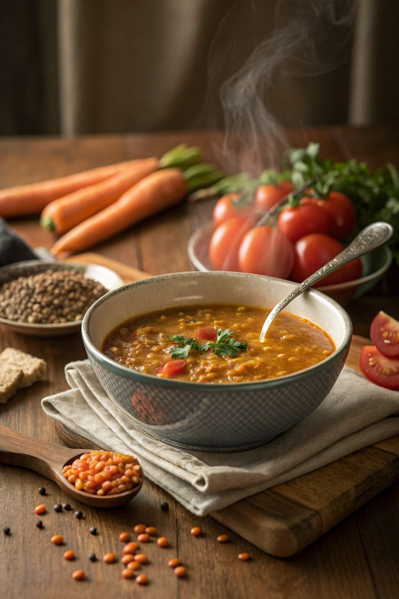
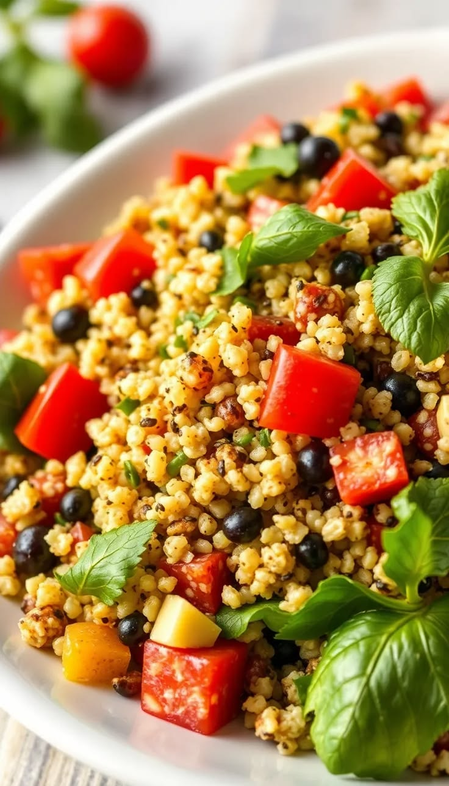
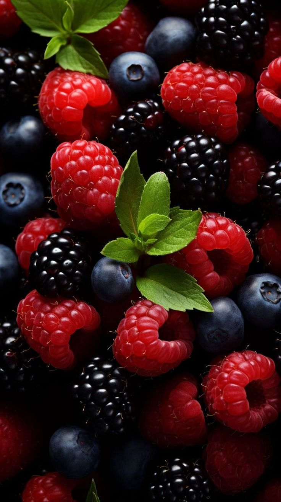

**Kidney Disease** is a condition where the kidneys do not work properly to filter waste and extra fluids from the blood. It can be caused by diabetes, high blood pressure, infections, or unhealthy lifestyle habits. Common symptoms include swelling, tiredness, and changes in urination. Healthy eating, drinking enough water, and regular medical check-ups can help protect kidney health. 💧


